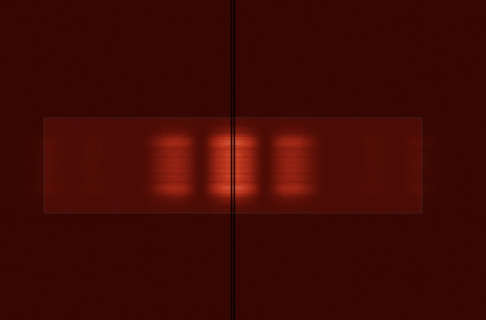

Wave optics by construction
Maxwell is the substrate, not a post-process. Interference, diffraction and polarization are computed per beam rather than painted on.
Spectra Render™ is the Reality Engine: the first realtime wave-optics path tracer. Spectral, polarized and unbiased by construction, live in Blender's viewport on any ray-tracing GPU.
Every path carries four hero wavelengths stratified across the visible band, along with its full Stokes polarization state. There are no RGB approximations anywhere in the transport, and it runs on NVIDIA, AMD and Intel ray-tracing GPUs.
Every clip here was captured live from Blender's Rendered viewport. Scene state lives on the GPU: move the camera and it retraces, drag a material slider and one constant updates. Nothing recompiles, nothing re-uploads.
Maxwell is the substrate, not a post-process. Interference, diffraction and polarization are computed per beam rather than painted on.
Hero-wavelength transport across 380–780 nm on every path. There is no spectral mode to switch on, because spectral is the only mode.
Light carries its full polarization state. Fresnel reflection polarizes the way real glass and water do.
Wavelength-dependent index of refraction splits white light into rainbows. Diamonds sparkle because the physics says so.
Soap bubbles, oil slicks, gratings and edge diffraction come out of the transport as first-class effects, straight from your Principled BSDF.
Spatiotemporal resampling built for wave optics drives noise down at interactive rates. The core underneath stays unbiased.
On NVIDIA RTX the viewport reconstructs with DLSS-RR. Every other GPU gets Intel Open Image Denoise.
Instanced geometry shares a single acceleration structure, so a forest costs its geometry memory only once.
Install a zip into stock Blender. Spectra uses your Principled materials, lights, cameras and colour management, with nothing to convert.
Spectra is checked against a ladder of reference renderers. Any change that touches a BSDF, Fresnel or the wave path has to reproduce double-slit fringe parity before it ships.

Stills and live viewport captures. No RGB shortcuts anywhere in the pipeline.
Spectra runs on Vulkan KHR ray tracing rather than a single vendor's API. Linux, Windows and Apple Silicon macOS.
| GPU | Status | Viewport denoise | Notes |
|---|---|---|---|
| NVIDIA RTX | Validated | DLSS Ray Reconstruction | Primary validated hardware, from laptop RTX to dual RTX 5090. |
| AMD Radeon RT | Experimental | Open Image Denoise | Exposes the required Vulkan RT extensions. |
| Intel Arc | Experimental | Open Image Denoise | Exposes the required Vulkan RT extensions. |
| Apple Silicon | Newest port | Open Image Denoise | M-series Macs through a bundled MoltenVK-based Vulkan layer. Unified memory keeps textures at full resolution. |
VK_KHR_acceleration_structure plus ray-tracing pipeline or ray query
OS Linux · Windows · macOS
Beta seats are open to artists and studios. Tell us what you render and which GPU you use.
Request beta access